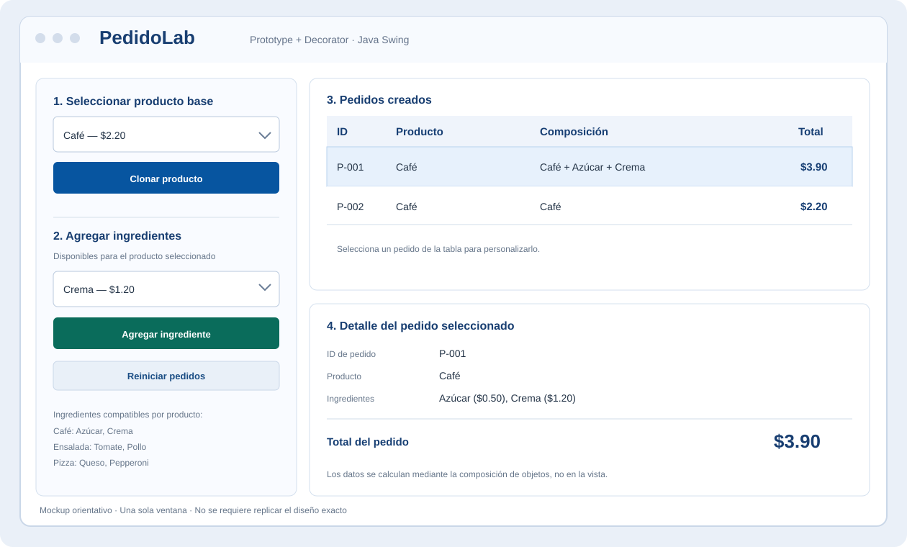
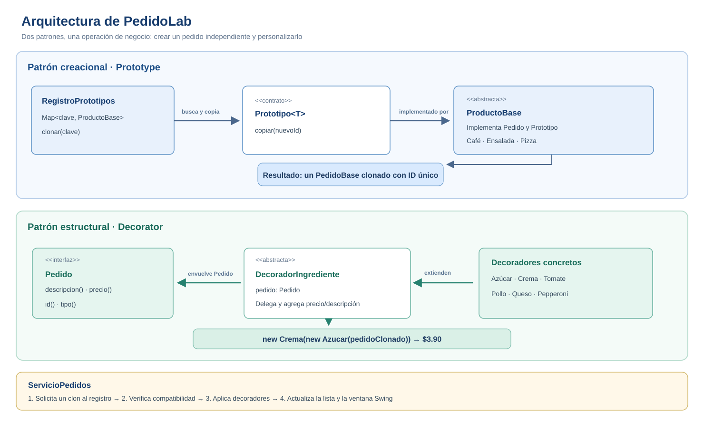

|
GUÍA DE PRÁCTICA DE LABORATORIO / TALLERES / CENTROS DE SIMULACIÓN — PARA DOCENTES | |||||||||||||||||||||||||||||||||||||||||||||||||||||||||||||
| CARRERA: Computación | ASIGNATURA: Programación Aplicada | |||||||||||||||||||||||||||||||||||||||||||||||||||||||||||||
| NRO. PRÁCTICA: | APP1 | TÍTULO PRÁCTICA: Personalizador de pedidos con Prototype y Decorator | ||||||||||||||||||||||||||||||||||||||||||||||||||||||||||||
OBJETIVO
|
||||||||||||||||||||||||||||||||||||||||||||||||||||||||||||||
| CONTEXTO |
Una cafetería universitaria ofrece productos base que pueden personalizarse. Es habitual crear varios
pedidos de un mismo producto y agregar ingredientes diferentes a cada uno. La aplicación debe reutilizar
las configuraciones originales y evitar clases combinatorias como Problema de diseño: obtener copias independientes de productos configurados y añadirles funcionalidades mediante composición. La interfaz gráfica debe ser sencilla; lo que se evalúa son los patrones y su integración. |
|||||||||||||||||||||||||||||||||||||||||||||||||||||||||||||
| RECURSOS |
|
|||||||||||||||||||||||||||||||||||||||||||||||||||||||||||||
| INSTRUCCIONES |
1. Aplicación que se debe construirDesarrollar PedidoLab, una aplicación Java Swing que permita clonar productos de un
catálogo, personalizar individualmente cada pedido y visualizar el resultado en tiempo real. Se admite
La aplicación debe ofrecer las siguientes operaciones:
2. Catálogo obligatorio
Reglas: trabajar con 3. Prototype: creación por clonaciónImplementar los participantes siguientes:
Obligatorio: la interfaz y el controlador obtienen los productos nuevos mediante el registro. No pueden sustituir la clonación con la construcción directa de productos en el controlador. Un nuevo pedido recibe ID distinto y su estado no comparte referencias mutables con otro pedido o con el prototipo. La solución no debe limitarse a usar 4. Decorator: personalización por composiciónImplementar los participantes siguientes:
Obligatorio: cada ingrediente envuelve el pedido existente. No se permite implementar
la personalización con un único La siguiente composición es referencial, no la implementación completa: La validación de compatibilidad debe estar en una clase de dominio o servicio, no solamente en los controles gráficos. El código no debe crear un decorador incompatible si la validación falla. 5. Arquitectura y ventanaSeparar modelo, patrones, reglas de negocio y vista. Organizar las clases de forma equivalente a esta estructura: La ubicación de paquetes puede variar si se mantienen la separación de responsabilidades y las
relaciones entre patrones. Mockup de referencia. La siguiente imagen describe la distribución de controles y no impone dimensiones ni un estilo gráfico específico.  Diagrama de responsabilidades. Identificar las clases concretas equivalentes en el código final.  6. Condiciones para validar ambos patronesPrototype se considera implementado cuando: existe un registro de objetos base; los pedidos se obtienen invocando la operación de copia de un prototipo; dos clones presentan identidad independiente; modificar o decorar uno no altera el otro ni el prototipo. Decorator se considera implementado cuando: existe un componente común
Integración se considera demostrada cuando: la aplicación parte de un clon real del registro, aplica dos decoradores al mismo pedido, conserva la identidad del pedido y presenta el resultado correcto sin tocar el registro. |
|||||||||||||||||||||||||||||||||||||||||||||||||||||||||||||
ACTIVIDADES POR DESARROLLAR
Fase 1. Modelo y Prototype
Fase 2. Decorator y reglas
Fase 3. Integración gráfica y pruebas
Defensa breve: mostrar el código donde se crea el clon y donde se anida un decorador. Crear en vivo un pedido nuevo con dos ingredientes, y explicar qué clases serían necesarias para añadir un ingrediente adicional. |
||||||||||||||||||||||||||||||||||||||||||||||||||||||||||||||
CASOS DE ACEPTACIÓN
Evidencia: para cada caso, registrar entrada, resultado esperado, resultado real y referencia de captura o prueba. Los importes deben proceder de la ejecución, no de valores escritos únicamente en la GUI. |
||||||||||||||||||||||||||||||||||||||||||||||||||||||||||||||
RÚBRICA
Cada criterio se califica con su valor completo, su mitad o cero, según el descriptor correspondiente. Una interfaz que funcione no reemplaza la implementación del patrón: no se asignan puntos de Prototype o Decorator a simulaciones con condiciones o duplicación de código. No se añaden penalizaciones adicionales a la rúbrica. Condiciones de evaluaciónLa calificación de cada criterio se determinará considerando dos componentes:
Cálculo de la calificación: Puntaje = Máximo del criterio ×
(0.75 × Implementación + 0.25 × Defensa)
Los niveles de implementación y defensa se expresan mediante valores entre 0 y 1. Un proyecto funcional no garantiza la calificación máxima. Si el estudiante no demuestra conocimiento de su implementación, perderá los puntos correspondientes al componente de defensa. Importante: La defensa se evaluará individualmente, incluso cuando el proyecto se desarrolle en equipo. Niveles de valoración de la defensa
|
||||||||||||||||||||||||||||||||||||||||||||||||||||||||||||||
| ENTREGABLES |
La entrega se realizará mediante el enlace del repositorio en el AVAC. No se requiere reproducir exactamente el mockup, ni crear varias ventanas. El código presentado debe corresponder con la evidencia y poder ejecutarse durante la defensa. |
|||||||||||||||||||||||||||||||||||||||||||||||||||||||||||||
| RESULTADOS OBTENIDOS |
Documentar los resultados obtenidos en el equipo de trabajo, utilizando una tabla con caso, entrada, esperado, real, evidencia y estado. Registrar explícitamente cualquier caso fallido. Adjuntar una captura de la aplicación con dos clones del mismo producto y distinta personalización, y otra con una composición de dos decoradores. |
|||||||||||||||||||||||||||||||||||||||||||||||||||||||||||||
| DEFENSA |
Defensa de la prácticaCada estudiante deberá presentar y defender su implementación de los patrones Prototype y Decorator. Durante la defensa, el docente podrá solicitar:
La defensa representará el 50 % de la puntuación máxima de cada criterio de la rúbrica. Importante: No será suficiente ejecutar la aplicación o describir únicamente su interfaz gráfica. El estudiante deberá demostrar conocimiento del código presentado. |
|||||||||||||||||||||||||||||||||||||||||||||||||||||||||||||
| CONCLUSIONES |
Redactar al menos tres conclusiones propias, vinculadas a resultados reales. Comparar la creación por clonación con la creación directa, explicar cómo la composición evita clases por combinación y describir una limitación de la solución. Las conclusiones deben basarse en la ejecución y el código entregados. |
|||||||||||||||||||||||||||||||||||||||||||||||||||||||||||||
| RECOMENDACIONES |
Antes de implementar la ventana, probar los dos patrones en consola o con pruebas unitarias. Mantener
el precio en |
|||||||||||||||||||||||||||||||||||||||||||||||||||||||||||||
Docente / Técnico Docente: Ing. Pablo Torres, Mgtr.
Firma: _______________________________